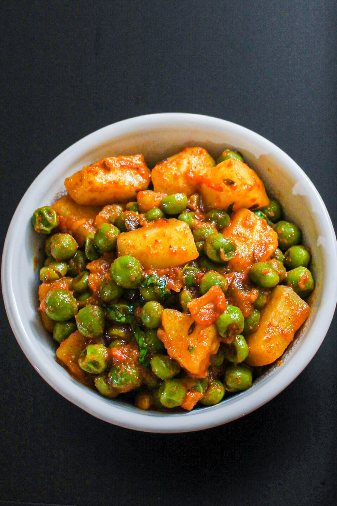

Aloo Mattar

Description
Indian-Style Peas and Potatoes
Ingredients
- 1 ½ cups peas, boiled
- 1 cup diced potato, boiled
- 1 cup tomatoes, chopped
- ½ cup onion, chopped finely
- ½ tablespoon ginger paste
- ½ tablespoon garlic paste
- 2 green chilies, chopped
- ½ teaspoon turmeric powder
- ½ teaspoon cumin powder
- 1 teaspoon coriander powder
- 1 teaspoon garam masala
- 1 teaspoon vegetable oil
- ½ cup water
- 1 tablespoon cilantro, chopped
- salt, to taste
Steps
- Heat the oil in a pan.
- Add the ginger,garlic, onions, chillies and tomatoes.
- Saute till the tomatoes and onions are softened.
- Add the turmeric powder, coriander powder, cumin powder and garam masala.
- Add salt to taste.
- Add the boiled peas and potatoes.
- Add the chopped cilantro.
- Add the water and bring to a simmer.
- Serve with Indian Bread or Rice.
- Tip: I microwave frozen peas and potatoes for about 10 minutes in my microwave.